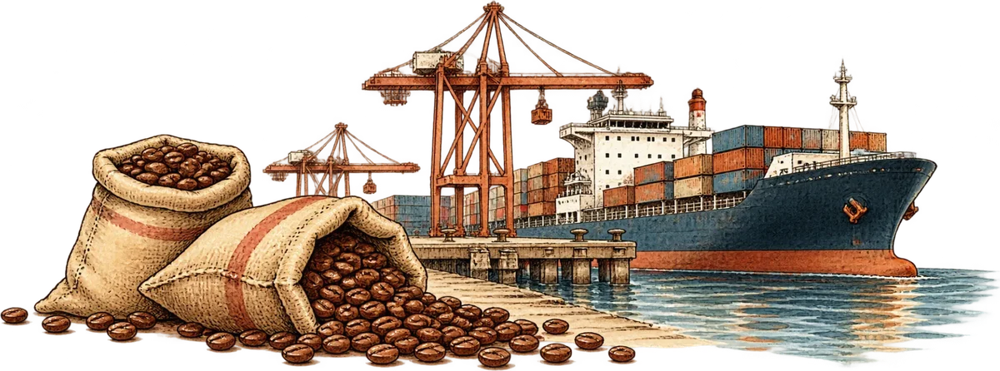
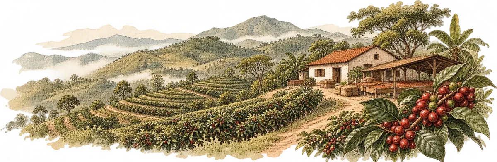
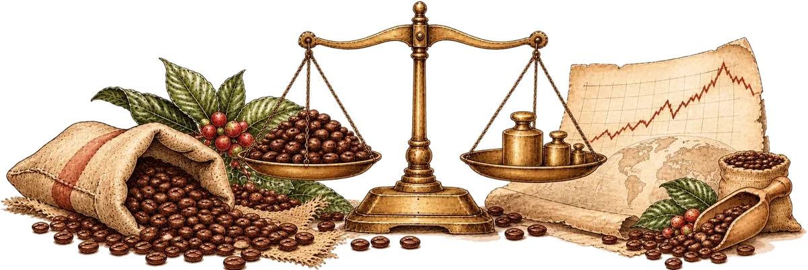

Coffee in Australia / A data story
From farm to café
The global journey behind an Australian ritual

The global journey behind an Australian ritual
51%
of Australians aged 14 and over drink coffee in an average week.
Yet Australia grows very little of it. So where does our coffee come from?
Australia has 56,304 café and restaurant businesses. Victoria has the most for its population.
Note: the Australian Bureau of Statistics counts cafés and restaurants together, as one industry, and counts businesses, not individual shop fronts.
The Northern Territory has fewer than 10 for every 10,000 residents, under half Victoria’s rate.
Source: ABS · Chart code (JSON) · Data (CSV)
Australia gained 616 of these businesses in a year, but its population grew faster.
Each line joins June 2024 to June 2025; a line that slopes down means fewer businesses per 10,000 residents. Victoria is drawn thicker.
Source: ABS · Chart code (JSON) · Data (CSV)
Victoria still had the highest rate, but that rate fell.
Most of these businesses are very small: 91% have fewer than 20 employees. “No employees” means the business is run only by its owner or owners.
Each column is a state. Wider columns mean more businesses. The colours divide businesses by number of employees. ACT, NT and Tasmania are combined.
Source: ABS · Chart code (JSON) · Data (CSV)
Most cafés and restaurants are small, but the beans they serve come from around the world. In 2025, Australia imported 112 million kilograms from 22 coffee-growing countries.

Line width and circle area show imported weight; the three countries supplied 52.7% of it. Lines end in central Australia, not at a port.
Source: UN Comtrade · Chart code (JSON) · Data (CSV)
Papua New Guinea was Australia’s fourth-largest supplier in 2025, but only 22nd in world production in 2024.
One sack is 1,000 tonnes, rounded. Exact tonnes end each row.
Source: UN Comtrade · Chart code (JSON) · Data (CSV)
Four of Australia’s five largest suppliers in 2025 were among the world’s top five producers in 2024.

Australia is not on this map because the UN Food and Agriculture Organization has no production record for it. That does not mean no coffee is grown here.
Drag the slider to see any year back to 1990. Countries under 25,000 tonnes are not drawn.
Source: UN FAO · Chart code (JSON) · Data (CSV)
That map has changed. Brazil has stayed first in every year shown, while others swapped places.
Six countries are shown; each one’s rank is calculated among all 78 producers, and a smaller number means more coffee grown. Where lines cross, two countries swapped places.
Source: UN FAO · Chart code (JSON) · Data (CSV)
Today, South America grows the most; Asia and Oceania come second and Africa third.
Each rectangle’s area shows tonnes grown in 2024; rectangles are grouped by region.
Source: UN FAO · Chart code (JSON) · Data (CSV)
Yield is how much coffee is harvested from each hectare (10,000 square metres) of farmland. Among the world’s ten largest producers in 2024, it varies widely.
Darker cells mean higher yields, in tonnes per hectare.
The bottom six countries stayed below one tonne per hectare in every year from 2015 to 2024.
Source: UN FAO · Chart code (JSON) · Data (CSV)
Where coffee grows shapes supply, which helps set its world price. The average world bean price peaked in November 2025.

Arabica and Robusta are the two main types of coffee bean. These are world prices for green, unroasted beans, before any café adds its costs.
Each dot is one month, shaded from light (October 2025) to dark (September 2026). The two prices moved broadly together, though not every month. Arabica is the simple average of three International Coffee Organization price groups. Prices are in US cents per pound; a pound is about 0.45 kg.
Source: ICO · Chart code (JSON) · Data (CSV)
That is near its 2021/22 high. Robusta is the cheaper of the two main beans, as chart 10 shows.
Each square is 1% of that year’s beans. Coffee years run from October to September. *2025/26 is an estimate.
Source: ICO · Chart code (JSON) · Data (CSV)
Prices also depend on supply and demand. 12A breaks down one year; 12B shows six.
The 2024/25 shortfall was the fourth in a row.
12A shows 2024/25 step by step. 12B shows each year: dark bars below zero mean less coffee was produced than consumed; light bars above zero mean more was produced. *2025/26 is an estimate.
Source: ICO · Chart code, top (JSON) · Chart code, bottom (JSON) · Data (CSV)
But a world bean price is not a café price. Australian prices cover much more than coffee beans.
Every line starts at 100 in October 2025. Lower lines show prices that fell, and higher lines show prices that rose.
What is counted: the Australian prices come from the Consumer Price Index (CPI), which tracks what households pay. “Coffee, tea and cocoa” and “meals out and takeaway” cover more than a cup of coffee.
Source: ICO and ABS · Chart code (JSON) · Data (CSV)
Brazil, Colombia and Vietnam supplied more than half of the coffee Australia imported from the 22 coffee-growing countries on this page in 2025. All three are also among the world’s largest producers.
At home, Australia’s cafés and restaurants are mostly small businesses. And while the world bean price fell 12% from October 2025 to August 2026, Australian coffee, tea and cocoa prices fell only 1.5%.
Australia’s coffee ritual is local in experience and global in supply, and over this period its prices did not move in step with the world bean price.

This page is written for general Australian readers; no background in statistics or the coffee trade is needed. Below is where every number comes from, and what to keep in mind.
| Charts | What it shows | Source | Period |
|---|---|---|---|
| 1, 2, 3 | Cafés and restaurants by state and number of employees | Australian Bureau of Statistics, Counts of Australian Businesses (data cube 2), released 16 December 2025 | June 2024 and June 2025 |
| 1, 2 | State populations, used to calculate businesses per 10,000 people | Australian Bureau of Statistics, National, state and territory population: June 2025 and June 2024 | June 2024 and June 2025 |
| 4, 5 | Coffee imported into Australia, by country of origin | UN Comtrade, Australia's own import records, customs code 0901 (coffee) | 2025 |
| 6, 7, 8, 9 | Coffee grown and coffee yield per hectare, by country | Food and Agriculture Organization of the United Nations, through Our World in Data: production and yield | 1961 to 2024 |
| 10, 11, 12, 13 | Wholesale prices, Robusta share of production, world supply and demand | International Coffee Organization, Coffee Market Report, September 2026 (Tables 1 and 3, and the export text on page 5) | October 2025 to September 2026 (prices); coffee years 2020/21 to 2025/26 (supply and demand) |
| 13 | What Australians pay for coffee and for eating out | Australian Bureau of Statistics, Consumer Price Index, Australia, August 2026, Table 3, expenditure classes “Coffee, tea and cocoa” and “Meals out and take away foods”, weighted average of eight capital cities | October 2025 to August 2026 |
| Introduction | Share of Australians who drink coffee in an average week | Roy Morgan Research, quoted in its news readership release of 24 November 2025 | 12 months to September 2025 |
| All maps | Map shapes and country locations | World Atlas (Natural Earth), Australian state boundaries by Rowan Hogan (simplified), country coordinates by dr5hn | Not applicable |